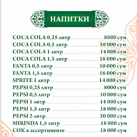

Вкус, тепло и атмосфера
Ресторан, в котором хочется остаться дольше
Xan Shatir — это место, где сочетаются домашняя теплая атмосфера, щедрые порции и настоящая узбекская гостеприимность. Здесь каждый вечер становится особенным.
Популярно

Мясное ассорти
Сытные блюда, ароматные специи и щедрые порции для настоящих гурманов.
13+
отзывов посетителей
4.7
средний рейтинг
22:00
время закрытия
100%
уютная атмосфера

О ресторане
Уют, забота и вкус в каждом блюде
Xan Shatir — это пространство, где атмосфера создается не только интерьером, но и вниманием к каждому гостю. Здесь ценят семейные ужины, деловые встречи, уютные посиделки и яркие праздники.
Мы готовим блюда с душой: от традиционных узбекских вкусов до современных авторских сочетаний, чтобы каждый визит оставлял только приятные впечатления.
✔ Порции сытные и щедрые
✔ Качественное обслуживание
✔ Уютный интерьер
Почему гости любят нас
Все, что важно для отличного отдыха
🍽️
Авторская кухня
Проверенные рецептуры и вкус, который приятно запоминается.
🤝
Дружелюбный сервис
Вежливый персонал и внимательное отношение к каждому гостю.
✨
Атмосфера уюта
Теплый интерьер, комфортная обстановка и отличный настрой.
Отзывы
Гостям нравится здесь
★★★★★“Очень вкусно, порции добротные, обслуживание отличное. Особенно понравилось, что всё выглядит аккуратно и уютно.”
★★★★★“Были во второй раз и снова остались довольны. Вкус не изменился, а атмосфера по-прежнему приятная и домашняя.”
★★★★★“Отличный ресторан, вкусно, комфортно и очень порадовал бешбармак. Рекомендую всем, кто предпочитает уютный отдых с достойной кухней.”
Бронь столика